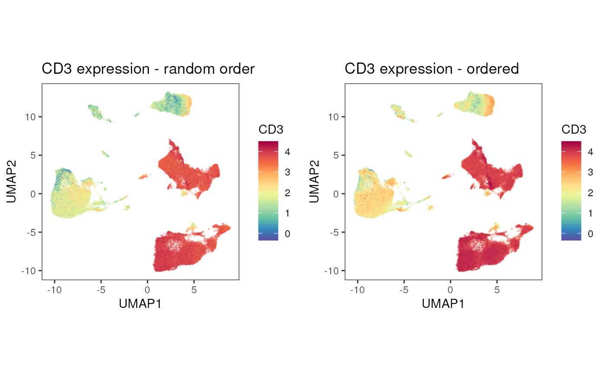
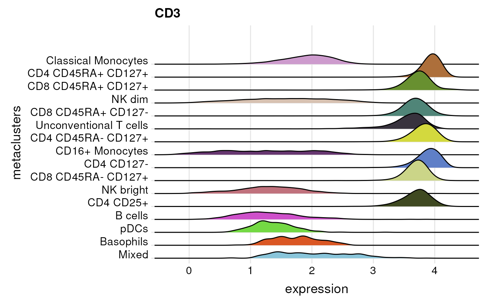
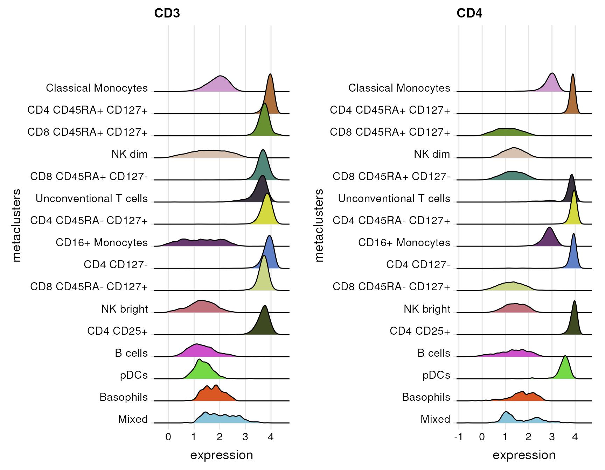
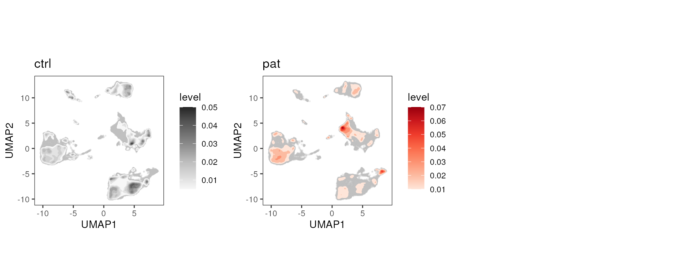

Date: 24.06.2024
cyCONDOR provides several functions to visualize the
results of cyCONDOR´s dimensionality reduction and
clustering workflows.
Load an example dataset
In this vignette, we will use a flow cytometry dataset of six PBMC
samples taken from three patients and three control. The data was
transformed and subjected to several dimensionality reduction methods as
well as clustering and metaclustering using cyCONDOR(see
vignettes: Data loading and transformation,
Dimensionality Reduction,
Clustering and cell annotation).
condor <- readRDS("../.test_files/conodr_example_016.rds")## List of 6
## $ expr :List of 1
## ..$ orig:'data.frame': 59049 obs. of 28 variables:
## .. ..$ FSC-A : num [1:59049] 4.38 4.22 4.27 4.18 4.08 ...
## .. ..$ SSC-A : num [1:59049] 3.91 3.24 3.42 3.62 3.7 ...
## .. ..$ CD38 : num [1:59049] 3.61 3.12 3.71 2.9 2.06 ...
## .. ..$ CD8 : num [1:59049] 0.869 2.118 3.802 2.748 3.868 ...
## .. ..$ CD195 (CCR5) : num [1:59049] 2.281 1.199 0.816 1.5 3.303 ...
## .. ..$ CD94 (KLRD1) : num [1:59049] 2.32 2.24 1.78 2.57 2.18 ...
## .. ..$ CD45RA : num [1:59049] 3.33 3.63 2.49 3.93 4.14 ...
## .. ..$ HLA-DR : num [1:59049] 3.173 1.595 3.066 0.973 0.62 ...
## .. ..$ CD56 : num [1:59049] 1.43 2.25 1.72 3.28 1.48 ...
## .. ..$ CD127 (IL7RA): num [1:59049] 1.03 3.16 1.17 1.58 3.1 ...
## .. ..$ CD14 : num [1:59049] 3.96 2.14 1.47 1.21 1.92 ...
## .. ..$ CD64 : num [1:59049] 2.475 0.462 0.85 1.075 0.981 ...
## .. ..$ CD4 : num [1:59049] 2.658 3.886 0.209 1.135 0.499 ...
## .. ..$ IgD : num [1:59049] 0.932 0.438 1.488 0.694 1.486 ...
## .. ..$ CD19 : num [1:59049] 1.822 1.583 0.813 1.703 0.357 ...
## .. ..$ CD16 : num [1:59049] 1.658 0.863 0.838 2.828 1.325 ...
## .. ..$ CD32 : num [1:59049] 2.476 0.743 1.056 0.887 0.756 ...
## .. ..$ CD197 (CCR7) : num [1:59049] 1.4012 2.6245 0.0844 0.9996 1.2096 ...
## .. ..$ CD20 : num [1:59049] 0.724 1.289 1.672 1.371 1.623 ...
## .. ..$ CD27 : num [1:59049] 1.737 3.89 3.564 0.638 0.622 ...
## .. ..$ CD15 : num [1:59049] 0.844 0.549 0.632 1.258 2.04 ...
## .. ..$ PD-1 : num [1:59049] 0.0514 0.9102 0.9839 0.4781 1.7587 ...
## .. ..$ CD3 : num [1:59049] 0.964 4.006 3.746 1.788 3.875 ...
## .. ..$ CD57 : num [1:59049] 1.277 0.531 1.006 3.039 3.004 ...
## .. ..$ CD25 : num [1:59049] 1.709 2.032 1.833 1.187 0.937 ...
## .. ..$ CD123 (IL3RA): num [1:59049] 2.32 1.14 1.13 1.11 1.28 ...
## .. ..$ CD13 : num [1:59049] 2.388 0.817 0.703 0.861 0.707 ...
## .. ..$ CD11c : num [1:59049] 3.792 0.645 2.025 0.668 1.946 ...
## $ anno :List of 1
## ..$ cell_anno:'data.frame': 59049 obs. of 3 variables:
## .. ..$ expfcs_filename: Factor w/ 6 levels "ID10.fcs","ID3.fcs",..: 1 1 1 1 1 1 1 1 1 1 ...
## .. ..$ sample_ID : chr [1:59049] "ID10" "ID10" "ID10" "ID10" ...
## .. ..$ group : chr [1:59049] "pat" "pat" "pat" "pat" ...
## $ pca :List of 1
## ..$ orig: num [1:59049, 1:28] -4.593 2.011 0.741 0.601 1.685 ...
## .. ..- attr(*, "dimnames")=List of 2
## .. .. ..$ : chr [1:59049] "ID10.fcs_1" "ID10.fcs_2" "ID10.fcs_3" "ID10.fcs_4" ...
## .. .. ..$ : chr [1:28] "PC1" "PC2" "PC3" "PC4" ...
## $ umap :List of 1
## ..$ pca_orig: num [1:59049, 1:2] -9.19 1.6 5.45 3.97 2.5 ...
## .. ..- attr(*, "scaled:center")= num [1:2] -0.126 -0.253
## .. ..- attr(*, "dimnames")=List of 2
## .. .. ..$ : chr [1:59049] "ID10.fcs_1" "ID10.fcs_2" "ID10.fcs_3" "ID10.fcs_4" ...
## .. .. ..$ : chr [1:2] "UMAP1" "UMAP2"
## $ tSNE :List of 1
## ..$ pca_orig: num [1:59049, 1:2] 18.26 -11.83 -24.09 5.71 -10.98 ...
## .. ..- attr(*, "dimnames")=List of 2
## .. .. ..$ : chr [1:59049] "ID10.fcs_1" "ID10.fcs_2" "ID10.fcs_3" "ID10.fcs_4" ...
## .. .. ..$ : chr [1:2] "tSNE1" "tSNE2"
## $ clustering:List of 2
## ..$ phenograph_pca_orig_k_60:'data.frame': 59049 obs. of 3 variables:
## .. ..$ Phenograph : Factor w/ 25 levels "1","2","3","4",..: 1 2 3 4 5 5 6 1 1 5 ...
## .. ..$ Description : chr [1:59049] "pca_orig_k60" "pca_orig_k60" "pca_orig_k60" "pca_orig_k60" ...
## .. ..$ metaclusters: Factor w/ 16 levels "Classical Monocytes",..: 1 2 3 4 5 5 1 1 1 5 ...
## ..$ FlowSOM_pca_orig_k_15 :'data.frame': 59049 obs. of 2 variables:
## .. ..$ FlowSOM : Factor w/ 15 levels "1","2","3","4",..: 12 11 4 2 3 3 12 12 12 3 ...
## .. ..$ Description: chr [1:59049] "pca_orig_k15" "pca_orig_k15" "pca_orig_k15" "pca_orig_k15" ...Visualize the results of dimensionality reduction and clustering
cyCONDOR comes with several methods to perform
dimensionality reduction. Two dimensional representations of each
reduction method can be visualized using the plot_dim_red()
function.
The function requires the user to specify a condor object, the
reduction method (e.g. pca, umap or tSNE) and the name of the actual
reduction_slot, e.g. “orig”. Further, a variable needs to be provided to
the parameter param, which is used to color the dots.
PCA
Let’s plot the first two Principle components of the PCA and color by the meta variable “group”.
plot_dim_red(fcd = condor,
expr_slot = NULL,
reduction_method = "pca",
reduction_slot = "orig",
cluster_slot = NULL,
param = "group",
title = "PCA")
tSNE
Changing reduction_method = "tSNE" and
reduction_slot = "pca_orig", results in a plot of the
tSNE.
plot_dim_red(fcd = condor,
expr_slot = NULL,
reduction_method = "tSNE",
reduction_slot = "pca_orig",
cluster_slot = NULL,
param = "group",
title = "tSNE")UMAP
Similiarly, reduction_method = "umap" and
reduction_slot = "pca_orig", gives us a the UMAP
representation that was calculated on the PCA on the transformed
expression data.
plot_dim_red(fcd = condor,
expr_slot = NULL,
reduction_method = "umap",
reduction_slot = "pca_orig",
cluster_slot = NULL,
param = "group",
title = "UMAP")
Colored by Phenograph, FlowSOM clustering or metaclusters
Instead of meta variables available in the cell_anno
slot, it is also possible to overlay cell population identities,
determined by cyCONDOR's clustering or cell label
implementations. In this case, the function additionally requires the
specification of a cluster_slot as input, to define were
param should be taken from.
In the following example, we will visualize the cluster identities
(param = "Phenograph") and the related metaclustering
annotation (param = "metaclusters") in the
cluster_slot “phenograph_pca_orig_k_60”.
p1<-plot_dim_red(fcd = condor,
expr_slot = NULL,
reduction_method = "umap",
reduction_slot = "pca_orig",
cluster_slot = "phenograph_pca_orig_k_60",
param = "Phenograph",
title = "UMAP colored by Phenograph clusters")
p2<-plot_dim_red(fcd = condor,
expr_slot = NULL,
reduction_method = "umap",
reduction_slot = "pca_orig",
cluster_slot = "phenograph_pca_orig_k_60",
param = "metaclusters",
title = "UMAP colored by metaclusters")
cowplot::plot_grid(plotlist = list(p1,p2),align = "v")
In the same manner, FlowSOM results can be plotted on the dimensionality reduction.
plot_dim_red(fcd = condor,
expr_slot = NULL,
reduction_method = "umap",
reduction_slot = "pca_orig",
cluster_slot = "FlowSOM_pca_orig_k_15",
param = "FlowSOM",
title = "UMAP colored by FlowSOM clusters")
Split plot by a variable
Sometimes it comes in handy to split the dimensionality reduction by
a variable, e.g. group, sample ID or experimental batches. In the
plot_dim_red() function this can be achieved via the
facet_by_variable parameter.
Setting facet_by_variable = T, will split the plot by
the variable provided in param.
plot_dim_red(fcd = condor,
expr_slot = NULL,
reduction_method = "umap",
reduction_slot = "pca_orig",
cluster_slot = NULL,
param = "group",
facet_by_variable = T,
title = "UMAP")
Providing facet_by_variable with a different variable
than specified in param, will keep the coloring by the
variable in param, but splits the plot by the faceting
variable. Note, that in case clustering variables are used, a
cluster_slot needs to be provided as well.
plot_dim_red(fcd = condor,
expr_slot = NULL,
reduction_method = "umap",
reduction_slot = "pca_orig",
cluster_slot = "phenograph_pca_orig_k_60",
param = "metaclusters",
facet_by_variable = "group",
title = "UMAP colored by metaclusters")
Export the plot as raster image
Visualizing hundred thousands of events can be demanding. Using
raster = T, the function will generate a raster image,
instead of plotting each event individually.
plot_dim_red(fcd = condor,
expr_slot = NULL,
reduction_method = "umap",
reduction_slot = "pca_orig",
cluster_slot = "FlowSOM_pca_orig_k_15",
param = "FlowSOM",
raster = T,
title = "UMAP colored by FlowSOM clusters")
Visualization of marker expression
In the next section, we will go through some examples of how marker
expression can be visualized with cyCONDOR. Since this is
most interesting, when the data are already clustered, almost all
functions require cluster or cell label information obtained via
cyCONDOR's clustering or cell label prediction workflows.
Only the function, plot_dim_red(), can be used without any
cell population labels.
Marker expression overlayed on dimensionality reduction
To overlay marker expression values on the dimensionality reduction,
we can use the plot_dim_red() function introduced in the
section before. Instead of a clustering_slot, the
expression_slot in which the expression values are stored
needs to be specified and the marker to be visualized is given to the
parameter param.
In large data sets, the dimensionality reduction can be “crowded” and
it might be useful to order the cells by their expression. Setting
order = T, will plot the cells with the highest expression
at the top.
p1<-plot_dim_red(fcd = condor,
expr_slot = "orig",
reduction_method = "umap",
reduction_slot = "pca_orig",
cluster_slot = NULL,
param = "CD3",
order = F, #default
title = "CD3 expression - random order")
p2<-plot_dim_red(fcd = condor,
expr_slot = "orig",
reduction_method = "umap",
reduction_slot = "pca_orig",
cluster_slot = NULL,
param = "CD3",
order = T,
title = "CD3 expression - ordered")
cowplot::plot_grid(plotlist = list(p1,p2),align = "v")
As above a facet_by_variable can be used to split the
plot by another variable.
plot_dim_red(fcd = condor,
expr_slot = "orig",
reduction_method = "umap",
reduction_slot = "pca_orig",
cluster_slot = NULL,
param = "CD3",
facet_by_variable = "group",
title = "CD3 expression split by group")Heatmap of marker expression
Heatmap visualizations are useful to get a fast overview across many
markers and cell populations. The plot_marker_HM() function
calculates the mean transformed expression for each cell population and
marker combination. The means are centered and scaled for each marker
and subsequently visualized as heatmap.
However, it should be mention that this comes with certain draw backs: 1) the distribution of the expression is not considered when looking at the mean and 2) the actual expression level is somewhat obscured by the row-wise scaling.
plot_marker_HM(fcd = condor,
expr_slot = "orig",
marker_to_exclude = c("FSC-A","SSC-A"),
cluster_slot = "phenograph_pca_orig_k_60",
cluster_var = "metaclusters")
By setting cluster_rows = T and
cluster_cols, rows and columns get clustered.
plot_marker_HM(fcd = condor,
expr_slot = "orig",
marker_to_exclude = c("FSC-A","SSC-A"),
cluster_slot = "phenograph_pca_orig_k_60",
cluster_var = "metaclusters",
cluster_rows = T,
cluster_cols = T)
The function plot_marker_group_HM works very similarly
with the addition that a meta variable available in
cell_anno is provided and used to further split the columns
by the levels of that meta variable. In the following example, we are
interested whether mean expression of phenotaping markers like CD3 or
CD19 is stable across the different samples by using
group_var = sample_ID.
plot_marker_group_HM(fcd = condor,
expr_slot = "orig",
marker_to_exclude = c("FSC-A","SSC-A"),
cluster_slot = "phenograph_pca_orig_k_60",
cluster_var = "metaclusters",
group_var = "sample_ID")
Plot mean expression as boxplots
Instead of as a heatmap, the mean (or median) expression can be
visualized as boxplots with each sample being represented by a dot. For
this, the plot_marker_boxplot requires the user to specify
a variable containing sample IDs in sample_var and a
grouping variable in group_var. Each sample ID should be
uniquely associated with one level in group_var. The
grouping variable could for example be the disease status or the batch
variable. Since the data has no batch and we are not yet interested in
differences in our biological groups (see
vignette("Differential Analysis"), we are using the
variable “experiment_name” in the following chunk to get an overview
about the expression in our samples.
condor$anno$cell_anno$experiment_name <-"test_data"
plot_marker_boxplot(fcd = condor,
expr_slot = "orig",
cluster_slot = "phenograph_pca_orig_k_60",
cluster_var = "metaclusters",
group_var = "experiment_name",
sample_var = "sample_ID",
marker = c("CD3","CD4","CD8","CD14","CD19","HLA-DR"),
fun = "mean",
facet_ncol = 3,
dot_size = 1)
By default the function will generate boxplots for all marker and
cell population combinations, which depending on the panel size can be
too much to inspect at once. With the parameters marker the
user can select the markers of interest, while
cluster_to_show allows to subset to certain cell
populations present in the given cluster_var. Further, it
is possible to calculate the median expression instead of mean by using
fun = "median".
Distribution of expression
Besides visualizing aggregated expression, cyCONDOR also
provides different visualization options to investigate the distribution
of marker expression across all cells in a population.
plot_marker_ridgeplot() and
plot_marker_violinplot(), both visualize the density
distribution of a marker for each cell population in
cluster_var and therefor provide insights whether a marker
is homogeneously expressed in a certain cluster (or cell population) or
whether only a part of the cells is expressing the marker highly or
lowly. These plots can be very useful, when inspecting and annotating
clusters, since they e.g. enable the detection of smaller subsets or
contamination in a cluster of cells, which is not visible in a
heatmap.
plot_marker_density() and (optionally)
plot_marker_violinplot() further split the distributions by
meta variables present in the cell_anno slot, which can
help to investigate technical and/or bioligical influencing factors.
Ridgeline plot
plot_marker_ridgeplot() visualizes a density
distribution of the expression for each cell population in
cluster_var for a marker specified in
marker.
plot_marker_ridgeplot(fcd = condor,
expr_slot = "orig",
cluster_slot = "phenograph_pca_orig_k_60",
cluster_var = "metaclusters",
marker = "CD3")## Warning: `expand_scale()` was deprecated in ggplot2 3.3.0.
## ℹ Please use `expansion()` instead.
## ℹ The deprecated feature was likely used in the cyCONDOR package.
## Please report the issue to the authors.
## This warning is displayed once every 8 hours.
## Call `lifecycle::last_lifecycle_warnings()` to see where this warning was
## generated.## Picking joint bandwidth of 0.0733
In case more than one marker are specified, the function returns a list of plots - one plot for each marker.
plot.list<- plot_marker_ridgeplot(fcd = condor,
expr_slot = "orig",
cluster_slot = "phenograph_pca_orig_k_60",
cluster_var = "metaclusters",
marker = c("CD3","CD4"))
cowplot::plot_grid(plotlist = plot.list,align = "v")## Picking joint bandwidth of 0.0733## Picking joint bandwidth of 0.0737
Violin plot
The plot_marker_violinplot requires the same input as
plot_marker_ridgeplot. But the density distribution of
marker expression is visualized as violins for each cell population and
the populations are shown next to each other instead of being vertically
stacked.
plot_marker_violinplot(fcd = condor,
expr_slot = "orig",
cluster_slot = "phenograph_pca_orig_k_60",
cluster_var = "metaclusters",
marker = "CD56")Again, provided with several marker names, the function returns a list of plots.
plot.list<-plot_marker_violinplot(fcd = condor,
expr_slot = "orig",
cluster_slot = "phenograph_pca_orig_k_60",
cluster_var = "metaclusters",
marker = c("CD3","CD56","HLA-DR","CD19"))
cowplot::plot_grid(plotlist = plot.list,align = "hv")As a site note, plot_marker_violinplot() optionally can
be given a grouping variable group_var which is used to
split each violin plot by. This can be useful when looking at biological
groups or batch variables.
Density plot
The plot_marker_density() can be used to compare
expression distributions between different levels in a given
group_var. This can for example be applied to investigate
homogeneity of staining and measuring procedure between samples or
experimental days.
plot_marker_density(fcd = condor,
expr_slot = "orig",
cluster_slot = "phenograph_pca_orig_k_60",
cluster_var = "metaclusters",
group_var = "sample_ID",
marker = "CD57")Classical cytometry dotplot
Finally, using plot_marker_dotplot() a scatter plot of
two markers can be generated to investigate the relation of their
expression. The marker on the x-axis is specified in
marker_x, while the marker on the y-axis is specified in
marker_y.
plot_marker_dotplot(fcd = condor,
expr_slot = "orig",
marker_x = "CD3",
marker_y = "CD19",
cluster_slot = "phenograph_pca_orig_k_60",
cluster_var = "metaclusters",
dot_size = 0.5)
Inspection of cell counts
As always, it is important to consider how many cells are actually
underlying visualizations that conceal the actual cells behind
aggregated expression values (mean/median) or density distributions.
cyCONDOR provides functions to quickly assess cell
counts.
You can either look at the cell counts per sample and cell population
in table format with the getTable() function setting
output_type = "counts", or visualize cell numbers with the
plot_counts_barplot() function.
# get counts as data frame
counts<-getTable(fcd = condor,
output_type = "counts",
cluster_slot = "phenograph_pca_orig_k_60",
cluster_var = "metaclusters",
group_var = "sample_ID",
numeric = F)
counts## group_var B cells Basophils CD16+ Monocytes CD4 CD127- CD4 CD25+
## ID10 ID10 111 13 342 365 101
## ID3 ID3 354 80 350 500 324
## ID5 ID5 493 35 219 485 202
## ID6 ID6 192 24 494 263 312
## ID7 ID7 171 59 143 875 126
## ID8 ID8 86 25 255 533 114
## CD4 CD45RA- CD127+ CD4 CD45RA+ CD127+ CD8 CD45RA- CD127+
## ID10 564 569 461
## ID3 1837 993 472
## ID5 1614 933 727
## ID6 535 191 500
## ID7 1572 1475 974
## ID8 613 1498 333
## CD8 CD45RA+ CD127- CD8 CD45RA+ CD127+ Classical Monocytes Mixed NK bright
## ID10 2123 682 3184 7 317
## ID3 142 1165 2338 48 464
## ID5 623 920 2372 248 512
## ID6 1085 894 2102 90 667
## ID7 68 308 2151 10 515
## ID8 1829 697 3008 31 247
## NK dim pDCs Unconventional T cells
## ID10 641 24 496
## ID3 825 80 28
## ID5 517 66 34
## ID6 1242 30 428
## ID7 1490 55 8
## ID8 79 54 598## B cells Basophils CD16+ Monocytes
## 1407 236 1803
## CD4 CD127- CD4 CD25+ CD4 CD45RA- CD127+
## 3021 1179 6735
## CD4 CD45RA+ CD127+ CD8 CD45RA- CD127+ CD8 CD45RA+ CD127-
## 5659 3467 5870
## CD8 CD45RA+ CD127+ Classical Monocytes Mixed
## 4666 15155 434
## NK bright NK dim pDCs
## 2722 4794 309
## Unconventional T cells
## 1592The plot_counts_barplot() function stacks absolute cell
numbers of each cell population on top of each other for each group in
the grouping variable, which can be set via the group_var
parameter.
# visualize counts as stacked bar plot, faceted by clustering
plot_counts_barplot(fcd = condor,
cluster_slot = "phenograph_pca_orig_k_60",
cluster_var = "metaclusters",
group_var = "sample_ID",
facet_by_clustering = F,
facet_ncol = 5
)
A faceting of the plot by cell population can be achieved by setting
the parameter facet_by_group = T.
# visualize counts as stacked bar plot, faceted by clustering
plot_counts_barplot(fcd = condor,
cluster_slot = "phenograph_pca_orig_k_60",
cluster_var = "metaclusters",
group_var = "sample_ID",
facet_by_clustering = T,
facet_ncol = 5
)Others
Visualize the loadings of PCs
PC_loadings() can be used to visualize the loadings for
each principle component.
PC_loadings(fcd = condor, data_slot = "orig")Density plot
plot_dim_density(fcd = condor,
reduction_method = "umap",
reduction_slot = "pca_orig",
group_var = "group",
color_density = c("Greys", "Reds"))
MORE visualization?
In this vignette, we mostly focused on visualizations that are useful
to investigate clusterings and support annotation of cell populations.
However, biological questions often revolve around comparing different
biological groups of samples. To get some inspirations how those can be
visualized, check out the
vignette("Differential Analysis")!
Session Info
info <- sessionInfo()
info## R version 4.3.1 (2023-06-16)
## Platform: x86_64-pc-linux-gnu (64-bit)
## Running under: Ubuntu 22.04.3 LTS
##
## Matrix products: default
## BLAS: /usr/lib/x86_64-linux-gnu/openblas-pthread/libblas.so.3
## LAPACK: /usr/lib/x86_64-linux-gnu/openblas-pthread/libopenblasp-r0.3.20.so; LAPACK version 3.10.0
##
## locale:
## [1] LC_CTYPE=en_US.UTF-8 LC_NUMERIC=C
## [3] LC_TIME=en_US.UTF-8 LC_COLLATE=en_US.UTF-8
## [5] LC_MONETARY=en_US.UTF-8 LC_MESSAGES=en_US.UTF-8
## [7] LC_PAPER=en_US.UTF-8 LC_NAME=C
## [9] LC_ADDRESS=C LC_TELEPHONE=C
## [11] LC_MEASUREMENT=en_US.UTF-8 LC_IDENTIFICATION=C
##
## time zone: Etc/UTC
## tzcode source: system (glibc)
##
## attached base packages:
## [1] stats graphics grDevices utils datasets methods base
##
## other attached packages:
## [1] cyCONDOR_0.2.0
##
## loaded via a namespace (and not attached):
## [1] IRanges_2.34.1 Rmisc_1.5.1
## [3] urlchecker_1.0.1 nnet_7.3-19
## [5] CytoNorm_2.0.1 TH.data_1.1-2
## [7] vctrs_0.6.4 digest_0.6.33
## [9] png_0.1-8 shape_1.4.6
## [11] proxy_0.4-27 slingshot_2.8.0
## [13] ggrepel_0.9.4 parallelly_1.36.0
## [15] MASS_7.3-60 pkgdown_2.0.7
## [17] reshape2_1.4.4 httpuv_1.6.12
## [19] foreach_1.5.2 BiocGenerics_0.46.0
## [21] withr_2.5.1 ggrastr_1.0.2
## [23] xfun_0.40 ggpubr_0.6.0
## [25] ellipsis_0.3.2 survival_3.5-7
## [27] memoise_2.0.1 hexbin_1.28.3
## [29] ggbeeswarm_0.7.2 RProtoBufLib_2.12.1
## [31] princurve_2.1.6 profvis_0.3.8
## [33] ggsci_3.0.0 systemfonts_1.0.5
## [35] ragg_1.2.6 zoo_1.8-12
## [37] GlobalOptions_0.1.2 DEoptimR_1.1-3
## [39] Formula_1.2-5 prettyunits_1.2.0
## [41] promises_1.2.1 scatterplot3d_0.3-44
## [43] rstatix_0.7.2 globals_0.16.2
## [45] ps_1.7.5 rstudioapi_0.15.0
## [47] miniUI_0.1.1.1 generics_0.1.3
## [49] ggcyto_1.28.1 base64enc_0.1-3
## [51] processx_3.8.2 curl_5.1.0
## [53] S4Vectors_0.38.2 zlibbioc_1.46.0
## [55] flowWorkspace_4.12.2 polyclip_1.10-6
## [57] randomForest_4.7-1.1 GenomeInfoDbData_1.2.10
## [59] RBGL_1.76.0 ncdfFlow_2.46.0
## [61] RcppEigen_0.3.3.9.4 xtable_1.8-4
## [63] stringr_1.5.0 desc_1.4.2
## [65] doParallel_1.0.17 evaluate_0.22
## [67] S4Arrays_1.0.6 hms_1.1.3
## [69] glmnet_4.1-8 GenomicRanges_1.52.1
## [71] irlba_2.3.5.1 colorspace_2.1-0
## [73] isoband_0.2.7 harmony_1.1.0
## [75] reticulate_1.34.0 readxl_1.4.3
## [77] magrittr_2.0.3 lmtest_0.9-40
## [79] readr_2.1.4 Rgraphviz_2.44.0
## [81] later_1.3.1 lattice_0.22-5
## [83] future.apply_1.11.0 robustbase_0.99-0
## [85] XML_3.99-0.15 cowplot_1.1.1
## [87] matrixStats_1.1.0 xts_0.13.1
## [89] class_7.3-22 Hmisc_5.1-1
## [91] pillar_1.9.0 nlme_3.1-163
## [93] iterators_1.0.14 compiler_4.3.1
## [95] RSpectra_0.16-1 stringi_1.7.12
## [97] gower_1.0.1 minqa_1.2.6
## [99] SummarizedExperiment_1.30.2 lubridate_1.9.3
## [101] devtools_2.4.5 CytoML_2.12.0
## [103] plyr_1.8.9 crayon_1.5.2
## [105] abind_1.4-5 locfit_1.5-9.8
## [107] sp_2.1-1 sandwich_3.0-2
## [109] pcaMethods_1.92.0 dplyr_1.1.3
## [111] codetools_0.2-19 multcomp_1.4-25
## [113] textshaping_0.3.7 recipes_1.0.8
## [115] openssl_2.1.1 Rphenograph_0.99.1
## [117] TTR_0.24.3 bslib_0.5.1
## [119] e1071_1.7-13 destiny_3.14.0
## [121] GetoptLong_1.0.5 ggplot.multistats_1.0.0
## [123] mime_0.12 splines_4.3.1
## [125] circlize_0.4.15 Rcpp_1.0.11
## [127] sparseMatrixStats_1.12.2 cellranger_1.1.0
## [129] knitr_1.44 utf8_1.2.4
## [131] clue_0.3-65 lme4_1.1-35.1
## [133] fs_1.6.3 listenv_0.9.0
## [135] checkmate_2.3.0 DelayedMatrixStats_1.22.6
## [137] pkgbuild_1.4.2 ggsignif_0.6.4
## [139] tibble_3.2.1 Matrix_1.6-1.1
## [141] rpart.plot_3.1.1 callr_3.7.3
## [143] tzdb_0.4.0 tweenr_2.0.2
## [145] pkgconfig_2.0.3 pheatmap_1.0.12
## [147] tools_4.3.1 cachem_1.0.8
## [149] smoother_1.1 fastmap_1.1.1
## [151] rmarkdown_2.25 scales_1.2.1
## [153] grid_4.3.1 usethis_2.2.2
## [155] broom_1.0.5 sass_0.4.7
## [157] graph_1.78.0 carData_3.0-5
## [159] RANN_2.6.1 rpart_4.1.21
## [161] farver_2.1.1 yaml_2.3.7
## [163] MatrixGenerics_1.12.3 foreign_0.8-85
## [165] ggthemes_4.2.4 cli_3.6.1
## [167] purrr_1.0.2 stats4_4.3.1
## [169] lifecycle_1.0.3 uwot_0.1.16
## [171] askpass_1.2.0 caret_6.0-94
## [173] Biobase_2.60.0 mvtnorm_1.2-3
## [175] lava_1.7.3 sessioninfo_1.2.2
## [177] backports_1.4.1 cytolib_2.12.1
## [179] timechange_0.2.0 gtable_0.3.4
## [181] rjson_0.2.21 umap_0.2.10.0
## [183] ggridges_0.5.4 parallel_4.3.1
## [185] pROC_1.18.5 limma_3.56.2
## [187] jsonlite_1.8.7 edgeR_3.42.4
## [189] RcppHNSW_0.5.0 bitops_1.0-7
## [191] ggplot2_3.4.4 Rtsne_0.16
## [193] FlowSOM_2.8.0 ranger_0.16.0
## [195] flowCore_2.12.2 jquerylib_0.1.4
## [197] timeDate_4022.108 shiny_1.7.5.1
## [199] ConsensusClusterPlus_1.64.0 htmltools_0.5.6.1
## [201] diffcyt_1.20.0 glue_1.6.2
## [203] XVector_0.40.0 VIM_6.2.2
## [205] RCurl_1.98-1.13 rprojroot_2.0.3
## [207] gridExtra_2.3 boot_1.3-28.1
## [209] TrajectoryUtils_1.8.0 igraph_1.5.1
## [211] R6_2.5.1 tidyr_1.3.0
## [213] SingleCellExperiment_1.22.0 labeling_0.4.3
## [215] vcd_1.4-11 cluster_2.1.4
## [217] pkgload_1.3.3 GenomeInfoDb_1.36.4
## [219] ipred_0.9-14 nloptr_2.0.3
## [221] DelayedArray_0.26.7 tidyselect_1.2.0
## [223] vipor_0.4.5 htmlTable_2.4.2
## [225] ggforce_0.4.1 CytoDx_1.20.0
## [227] car_3.1-2 future_1.33.0
## [229] ModelMetrics_1.2.2.2 munsell_0.5.0
## [231] laeken_0.5.2 data.table_1.14.8
## [233] htmlwidgets_1.6.2 ComplexHeatmap_2.16.0
## [235] RColorBrewer_1.1-3 rlang_1.1.1
## [237] remotes_2.4.2.1 colorRamps_2.3.1
## [239] Cairo_1.6-1 ggnewscale_0.4.9
## [241] fansi_1.0.5 hardhat_1.3.0
## [243] beeswarm_0.4.0 prodlim_2023.08.28